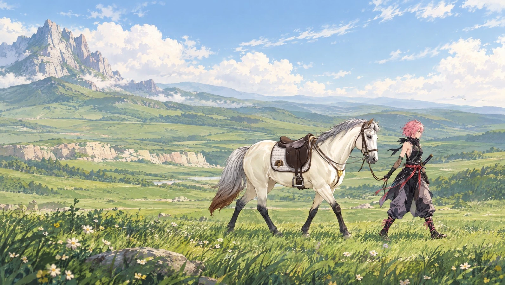
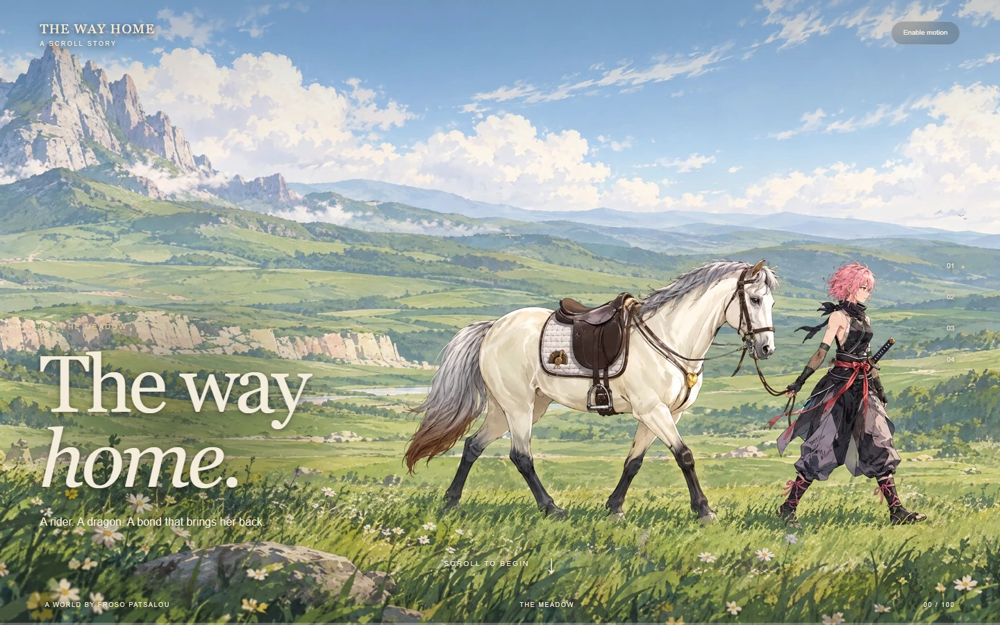
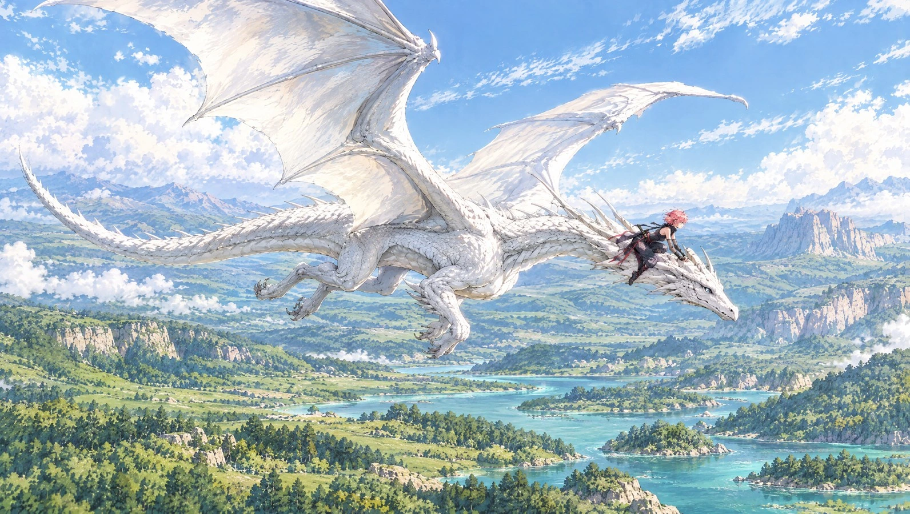
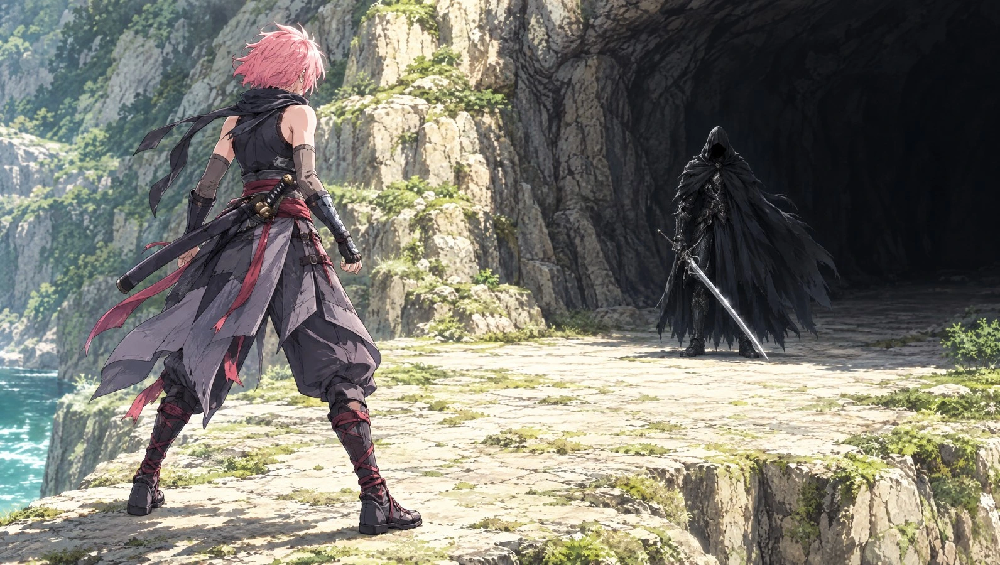
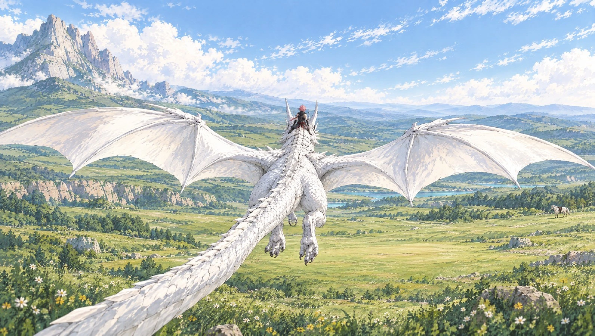
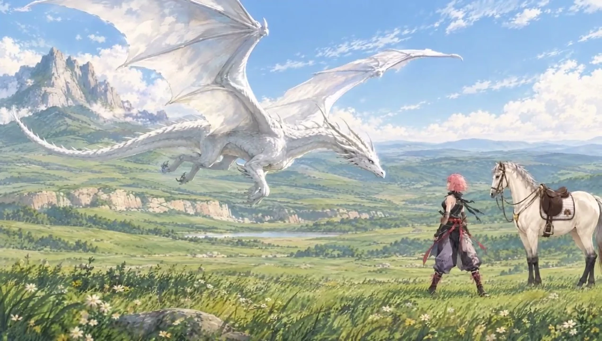
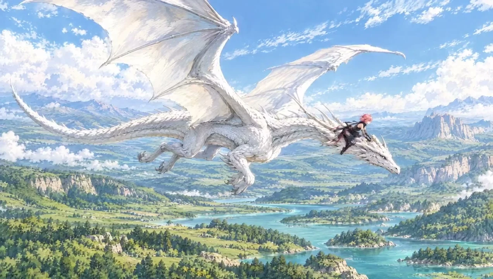

01
The meadow
00 to 08 secondsA quiet walk with the horse opens into the reveal of the dragon.
The Way Home
A fantasy story you move through by scrolling. A rider, a silver dragon and a journey that brings her back.

49 secondsOne continuous film
4 main scenesA complete story arc
3 connectorsMovement between scenes
Both directionsScroll forward or back
For our AI class, the assignment was to build a scroll world, a visual story where scrolling controls the experience. I chose an illustrated fantasy adventure about a rider, her horse and a silver dragon.
I already had a scenario, character references and ideas for the action and camera movements. The challenge was to turn that direction into connected footage, then into a website that visitors could explore at their own pace.
The story moves from a quiet meadow into flight, danger and rescue, before returning to the opening landscape. The message behind it is simple, courage can also mean accepting help.

A quiet walk with the horse opens into the reveal of the dragon.

The rider travels on the dragon’s snout over a green, watery landscape.

A confrontation with the hooded villain leads to the dragon’s rescue.

The escape becomes a return to the horse and the opening composition.
A pink haired heroine, cream horse, silver dragon and hooded villain anchor the cast. Natural greens and sky blues make the flight feel open, while the cave shifts the mood towards danger.
Georgia for the story’s display type, Arial for the interface.
The transitions needed as much direction as the main scenes. Each connector had to carry the characters, camera and landscape into the next moment.
I broke the scenario into four main scenes and three connecting clips, keeping the full journey within a 50 second limit.
The character references defined the cast. Scene images established the framing, costume, landscape and direction of movement.
The first scene, connector and next scene were assembled and reviewed before producing the rest. Actual video boundary frames guided the transitions.
Revisions shortened the first flight, gave the fight more time, added the villain’s recoil and extended the escape flight. The final film is 49 seconds and silent.


Scroll down to move the story forward, or up to revisit a moment. The artwork fills the screen, while short captions and four chapter controls keep the interface quiet.
Scrolling maps to the film’s timeline. Smoothing and a retained canvas frame help prevent flashes while the next frame decodes.
The ending blends into the opening. A continuous logical timeline lets the journey loop forward and backward.
Reduced motion uses four still scenes in the same full screen stage. Visitors can choose to enable animation.
The live website loads the full film before enabling motion, with visible download progress. Its 4K version is upscaled from the 720p production master.
Working with AI meant being specific about characters, camera positions, action and timing. The connected journey depended on reviewing and revising those details, rather than accepting each clip on its own.
Testing a small sequence first helped check whether the scene and connector approach worked. Extracting actual boundary frames gave the next clip a concrete point to continue from.
The higher quality live export brings a substantial download and decoding cost. Loading feedback and the still mode help, while physical phone and Safari testing remain a next step.